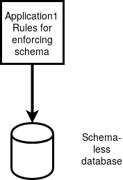
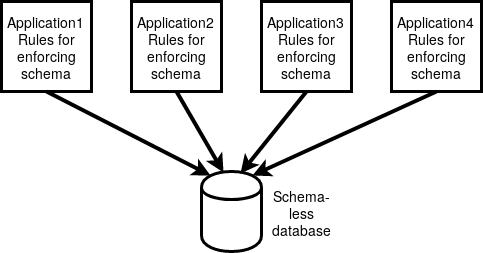

Objective 7.1 - Designing a database using MongoDB
Although NoSQL databases typically don't have schema, MongoDB does allow for using a Schema to manipulate the database when using the Node.js package, mongoose . MongoDB also has what are called collections that are similar in some ways to tables in a relational database. Because of these features (collections and schema), MongoDB is sometimes selected as a NoSQL database for those who are transitioning from a relational database world.
Before creating a database using MongoDB, make sure you go through the setup outlined on this page . With the basic setup performed there, let's create a database called registrations_db. Here are the steps to start:
$ cd ~/Desktop/node_area/docker_mongo/docs
$ mkdir registrations
$ cd registrations
$ docker container start mongo_cont
$ docker exec -it mongo_cont bash
# mongo
> use registrationsIn the host, change into the ~/Desktop/node_area/docker_mongo/docs/registrations folder. Create the following file, "init.js":
conn = new Mongo();
db = conn.getDB("registrations");
db.students.drop();
db.students.save({_id: 1, first_name: 'Jane', last_name: 'Doe'});
db.students.save({_id: 2, first_name: 'John', last_name: 'Doe'});
db.students.save({_id: 3, first_name: 'Bill', last_name: 'Gates'});Inside the Mongo shell, run:
> load('init.js')to run that script. This will put those values inside a collection named students . Line 1 gets a connection to the MongoDB server. Line 2 sets the registrations database to be the database that is used. If that database does not yet exist, line 2 creates that database. Line 3 drops everything in the students collection. This is somewhat like dropping a table. The difference is that there is no schema (fields and field types) to drop. Lines 4-6 insert documents into the students collection. Note that by inserting a value for _id , MongoDB does not generate a value of _id . If you look at the example on the page referred to above, you can see that the are generated from unique hexadecimal strings. The hexadecimal string is a 12 byte value that consists of a 4 byte value representing time, a 5-byte random value and a 3-byte counter starting with a random value. For our course, we will generally set _id to simple integer values to make it easier to identify a document.
MongoDB documents
Like most NoSQL databases, a document in MongoDB is just like a JavaScript object. That is, a document just consists of key:value pairs separated by commas, enclosed in a pair of curly braces. The value of a key can be another document or even an array of documents. This means that you could store the above data in a single document like this:
{
students: [
{
_id : 1,
first_name: "Jane",
last_name: "Doe"
},
{
_id : 2,
first_name: "John",
last_name: "Doe"
},
{
_id : 3,
first_name: "Bill",
last_name: "Gates"
}
]
}In this document, the students key has an array of documents as its value. That would be useful if you wanted to group all those documents together, but it would not be useful if you need to query this kind of document along with other documents that contain just a single student. So, this is probably not a good design, but there is nothing that would prevent us from using such a document. One of the most important things in designing a database in MongoDB is to plan on how you want to query the data. Once you have figured out all the ways that you intend to do select queries on the data, then you choose a document format that is suited for performing those queries.
This should tell you that you don't necessarily want to convert a relational database into a MongoDB database or any other NoSQL database. If the data truly fits into a normalized database, it often does not make sense to try to put that data into a MongoDB database.
Moving MongoDB data to PostgreSQL
PostgreSQL has a data type of jsonb or binary-JSON. Although MySQL can store JSON strings, MySQL does not yet support binary JSON. The main advantage of binary-JSON, is that binary-JSON in PostgreSQL can be indexed leading to high performance searches. Since the main reason to use a NoSQL database is to allow searching on much larger amounts of data than is typically stored in a relational database, the ability to use indexes (to allow for binary searches) is very important.
This is why you can find a lot of information on migrating MongoDB to PostgreSQL, because PostgreSQL has the binary-JSON type. Here is an article, Postgres vs. MongoDB for Storing JSON data that compares these two databases for storing JSON data. In this article, Why we moved from NoSQL MongoDB to PostgreSQL , they talk about ten-fold reductions in database size and better performance with PostgreSQL.
One of the common reasons for moving from a NoSQL database back to PostgreSQL, is that NoSQL database are schema-less. This often means that the applications utilizing the databases have to enforce the schema on the database. This is probably okay if you have just one main application managing the data.

Here changes to the documents to help the application be more efficient can be managed because only one set of rules need to be enforced.
However, if you have multiple applications that enforce different kinds of schema on the same backend database, this will likely lead to a situation where one or more applications become unwieldy. When there is no uniform way of dealing with the data, there is likely to be performance compromises or maintenance compromises for at least some of the applications.

Here, modifying the documents in the database to improve efficiency for one application might be inconsistent with how other applications use the data. The lack of a schema means that there won't be a uniform way of dealing with the data. Suppose you have an application that works well with a schema-less database. If you decide to change how that application is going to work, you may find it difficult to make the changes because those changes are not consistent with the way the original application was made to work. If the change is being driven by someone besides you, it may be outside of the rules you used to maintain the data. If that happens, you may be forced to create a new database and figure out a way to migrate the data from the existing database.
Adding sections for which students can register
Coming back to our registrations database, lets add a few sections that could be registered for by students in the students collection. Inside the ~/Desktop/node_area/docker_mongo/docs/registrations directory, create the following file, "sections.load":
conn = new Mongo()
db = conn.getDB("registrations")
db.sections.drop()
db.sections.insert({
_id: 1,
title: "CSNT110",
credits: 3
})
db.sections.insert({
_id: 2,
title: "CSNT132",
credits: 4
})
db.sections.insert({
_id: 3,
title: "CSNT140",
credits: 4
})
db.sections.insert({
_id: 4,
title: "CSNT228",
credits: 4
})
db.sections.insert({
_id: 5,
title: "CSNT231",
credits: 4
})Line 1 and 2 connect to the registrations database. Line 3 drops the sections collection in that database. Lines 4-28 insert some objects into that sections collection.
Here is an example of setting up the registrations database in MongoDB:
$ cd ~/Desktop/node_area/docker_mongo/docs/registrations
$ docker exec -it mongo_cont bash
> load('init.js')
> load('sections.load')
> use registrations
switched to db registrations
> show collections
sections
students
> db.students.find()
{ "_id" : 1, "first_name" : "Jane", "last_name" : "Doe" }
{ "_id" : 2, "first_name" : "John", "last_name" : "Doe" }
{ "_id" : 3, "first_name" : "Bill", "last_name" : "Gates" }
> db.sections.find()
{ "_id" : 1, "title" : "CSNT110", "credits" : 3 }
{ "_id" : 2, "title" : "CSNT132", "credits" : 4 }
{ "_id" : 3, "title" : "CSNT140", "credits" : 4 }
{ "_id" : 4, "title" : "CSNT228", "credits" : 4 }
{ "_id" : 5, "title" : "CSNT231", "credits" : 4 }
>This assumes that your Docker container providing MongoDB is already running. Now, let's add another collection that serves as kind of a bridge collection. This will allow use to use the $lookup function that behaves similarly to a join .
Prior to MongoDB version 3.2, the $lookup() function did not exist. There were early discussions that $lookup would not be part of the community edition as some developers thought that this would wrongly encourage people to treat MongoDB like a relational database. For those coming from a relational database world, the decision to inlude $lookup in the community edition, is probably a good thing.
Create the following script, "signups.load", that will be loaded on the Mongo command line to add a collection that keeps track of which section a student signs up for. So, assuming that Jane Doe signs up for CSNT110 and CSNT132, John Doe signs up for CSNT132 and CSNT140, and Bill Gates signs up for CSNT110, this is the contents of "signups.load":
conn = new Mongo()
db = conn.getDB("registrations")
db.student_section.drop()
db.student_section.insert({
_id: 1, student_id: 1, section_id: 1
})
db.student_section.insert({
_id: 2, student_id: 1, section_id: 2
})
db.student_section.insert({
_id: 3, student_id: 2, section_id: 2
})
db.student_section.insert({
_id: 4, student_id: 2, section_id: 3
})
db.student_section.insert({
_id: 5, student_id: 3, section_id: 1
})The following shows loading the "signups.load" file, and then the result of querying the student_section collection:
> load('signups.load')
true
> db.student_section.find()
{ "_id" : 1, "student_id" : 1, "section_id" : 1 }
{ "_id" : 2, "student_id" : 1, "section_id" : 2 }
{ "_id" : 3, "student_id" : 2, "section_id" : 2 }
{ "_id" : 4, "student_id" : 2, "section_id" : 3 }
{ "_id" : 5, "student_id" : 3, "section_id" : 1 }
>The process of performing querying this database is the subject of the next page .